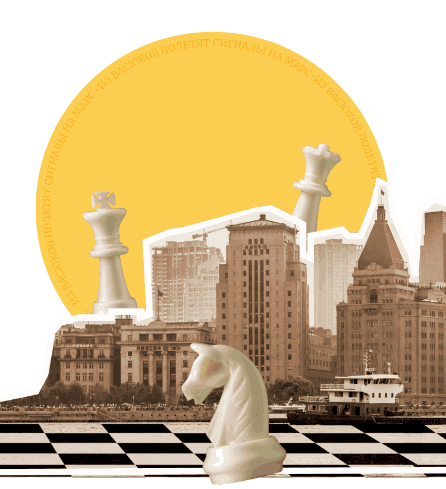
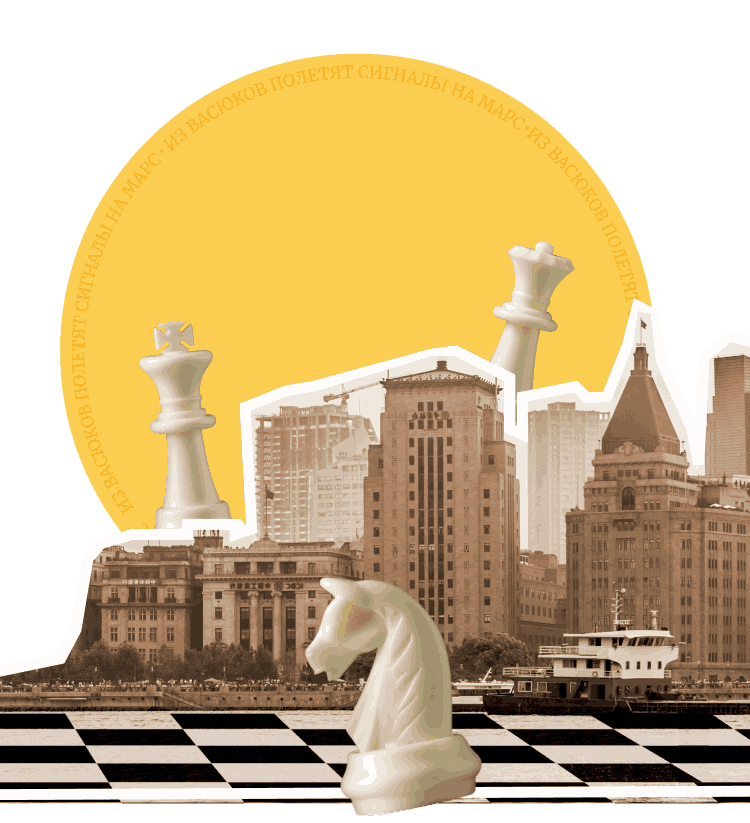

Превратите уездный город
в столицу
земного шара
Оплатите взнос на телеграммы для организации Международного васюкинского турнира по шахматам
Чтобы поддержать Международный васюкинский турнир
посетите лекцию на тему:
«Плодотворная дебютная идея»

и Сеанс
одновременной игры в шахматы на 160 досках
гроссмейстера О. Бендера
| Место проведения: | Клуб «Картонажник» |
| Дата и время мероприятия: | 22 июня 1927 г. в 18:00 |
| Стоимость входных билетов: | 20 коп. |
| Плата за игру: | 50 коп. |
| Взнос на телеграммы: | 100 руб. 21 руб. 16 коп. |
Этапы преображения Васюков
Будущие источники обогащения васюкинцев


1
Строительство железнодорожной магистрали Москва-Васюки
2
Открытие фешенебельной гостиницы «Проходная пешка» и других небоскрёбов
3
Поднятие сельского хозяйства в радиусе на тысячу километров: производство овощей, фруктов, икры,
шоколадных конфет
4
Строительство дворца для турнира
5
Размещение гаражей для гостевого автотранспорта
6
Постройка сверхмощной радиостанции для передачи всему миру сенсационных результатов
7
Создание аэропорта «Большие Васюки» с регулярным отправлением почтовых самолётов и дирижаблей во все концы света, включая Лос-Анжелос и Мельбурн
Участники турнира